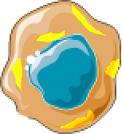
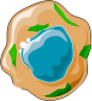
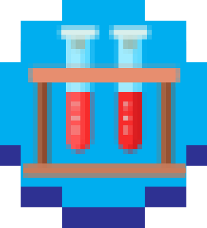
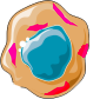
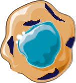
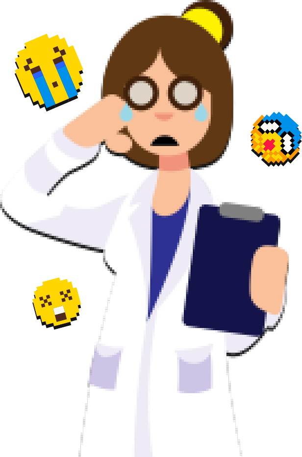
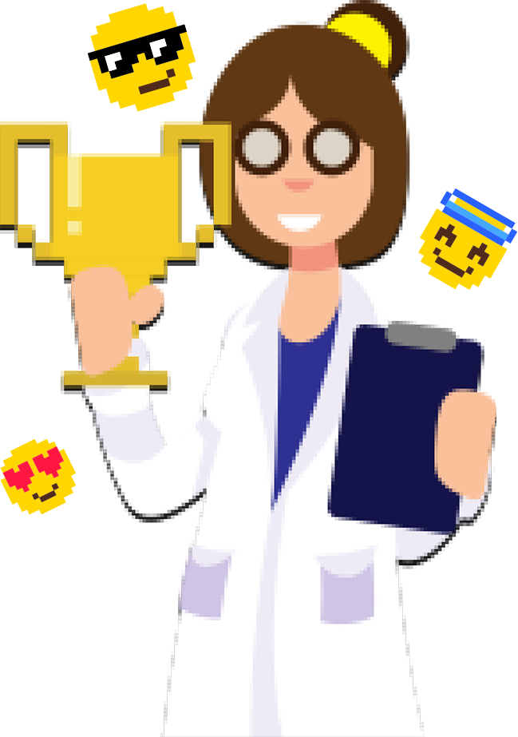

Loading...
{{ dias }} dias
Parabéns, acabaste de receber uma bolsa de investigação de 4 anos! Tens 1460 dias para descobrir a proteína correta para identificar cancro nas células. Boa sorte!
Este thriller científico compara células normais das tumorais, com o objetivo de encontrar o indicador do estado de doença do paciente — o BIOMARCADOR. Escolhe uma das 4 Proteínas. Boa sorte!
Será que a célula tumoral tem muita proteína?

Vais ter de submeter um projeto para um congresso. Vais escrever ou não?
Vamos comparar com a célula normal. Qual das células vai ter mais proteína?
Será que a célula tumoral tem muita proteína?

Vamos comparar com a célula normal. Qual das células vai ter mais proteína?
Foste convidado para ser docente na faculdade. Aceitas o desafio?
Vamos validar no sangue uma hipótese. Será que descobriste o biomarcador?

Será que a célula tumoral tem muita proteína?

Vamos comparar com a célula normal. Qual das células vai ter mais proteína?
Tiveste um convite de última hora para ir de férias. Aceitas?
Vamos validar no sangue esta hipótese. Será que descobriste o biomarcador?
Será que a célula tumoral tem muita proteína?

Certo!
{{ message }}
Errado!
{{ message }}

Afinal não era esta proteína!
Escolher outra.
Não!
Não concluiste a tua pesquisa a tempo e terminou a bolsa… O mundo jamais saberá para que serve um biomarcador…
Vitória!
Biomarcadores são o futuro da humanidade e tu conquistaste glória eterna. Ganhaste fama e muito, mas muito dinheiro!

GLICOM
Este jogo interactivo foi elaborado no contexto do Emergence@UPorto - “Digital Media for Science Communication Hackaton”, em Setembro/2019
Equipa:
Ana Laranja, Comunicadora de Ciência
Dan Martini, Criativo
João Antunes, Developer
João Pedro Ribeiro, Criativo
Juliana Poças, Cientista